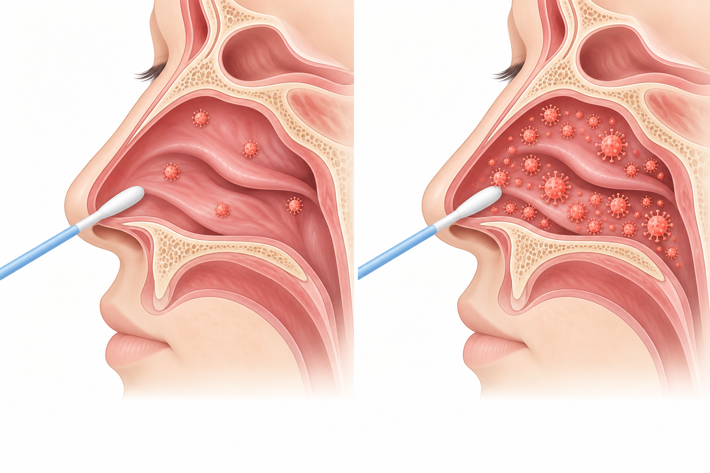

이럴 때 검사하러 오세요
FEVER
38도 이상 열
해열 성분이 든 감기약을 먹는데도 열이 뚫고 나올 때
CHILLS
오한
약을 먹는데도 으슬으슬 떨리는 오한이 올 때
48 HOURS
증상 시작 48시간 안
독감 약은 증상이 시작되고 48시간 안에 써야 효과가 큽니다
BEFORE HOLIDAY
주말·연휴 전
병원이 쉬는 동안 48시간이 지나지 않게 미리 검사합니다
검사 결과는 이렇게 읽습니다

너무 일찍 하루 지나| 결과 | 이렇게 받아들이세요 |
|---|---|
| 음성 | 너무 일찍 검사하면 바이러스가 덜 불어 음성이 나올 수 있습니다. 하루 지나 다시 하면 양성이 되기도 합니다. 증상이 계속되면 다시 오세요. |
| 양성 | 양성이면 감염 가능성이 높습니다. 신속항원검사는 걸렸는데도 음성으로 나오는 경우(위음성)는 흔하지만, 안 걸렸는데 양성으로 나오는 경우(위양성)는 드뭅니다. 증상과 유행 상황을 함께 보고 판단합니다. |
| 증상 없음 | 증상·노출 여부에 따라 검사 시점을 상담하세요. 열이 없어도 호흡기 증상이 생기면 진료받으세요. |
독감이면 이렇게 치료합니다
| 방법 | 먹는 약 · 타미플루 | 주사 · 페라미플루 |
|---|---|---|
| 기간 | 5일 동안 먹습니다 | 1회 맞으면 끝납니다 |
| 특징 | 처방받아 집에서 먹습니다 | 한 번의 정맥주사로 투약을 마칠 수 있어, 먹는 약이 부담스러운 분께 권해 드립니다. 먹는 약보다 열이 하루쯤 빨리 떨어지는 경우가 많습니다(개인차가 있습니다). 비용은 접수에서 안내해 드립니다. |
치료 중에도 열이 계속되면 폐렴 여부를 엑스레이로 확인합니다. 나이가 많거나 지병이 있거나 증상이 심하면 48시간이 지나도 치료할 수 있습니다.
집에서는 · AT HOME
- 공간을 나누고 식사도 따로 합니다.
- 가족과 있을 때는 마스크를 씁니다.
- 손 씻기를 자주 합니다.
- 물을 충분히 마시고 푹 쉽니다.
흔한 오해 · MYTH
- “몸살엔 수액이나 엉덩이 주사 한 대면 된다” — 수액은 부족한 수분·전해질을 채우고, 해열·진통 근육주사는 열과 통증을 덜어 회복을 돕습니다. 다만 독감 자체를 치료하는 약은 아니며, 항바이러스제는 증상·발병 시점·위험요인을 보고 처방합니다.
- “독감도 일반 감기약으로 충분하다” — 감기약은 증상만 덜어 줍니다.
- “땀을 빼면 낫는다” — 치료법이 아닙니다. 탈수를 조심하세요.
- “음성이니 독감이 아니다” — 초기엔 음성일 수 있습니다.
이럴 땐 바로 응급실로 · EMERGENCY
- 숨이 차거나 가슴이 답답하고 아플 때
- 입술이 파래지거나 의식이 흐려질 때
- 물을 못 마시거나 소변이 크게 줄 때
- 좋아지다가 다시 열·기침이 심해질 때
65세 이상·임신부·만성 심장·폐·신장 질환·당뇨·면역저하가 있으면 증상이 가볍더라도 일찍 진료를 받으세요.